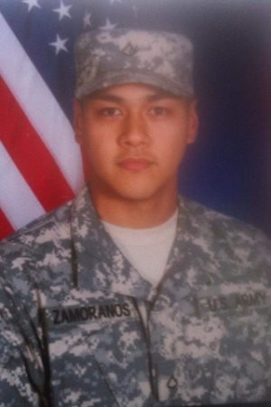

About Me
SPC Zamoranos, Peterivan V. served as the Help Desk Technician for the Regional Network Management Team of the 59th Signal Battalion, Headquarters and Headquarters Detachment, Fort Richardson, Alaska. Entered the Army in March 2012, attended Basic Training at Fort Benning, Georgia, and Advanced Individual Training at Fort Gordon, Georgia. He has a Bachelor’s Degree in Accounting from California State University, Dominguez Hills.
First duty station was with 501st Signal Company in Camp Humphreys, Republic of Korea, where he held the positions of Blackberry Support Specialist, Information Assurance Technician, and Customer Support Specialist. Military school includes Warrior Leader’s Course. Awards and decorations include two Army Good Conduct Medals, the National Defense Service Medal, the Global War on Terrorism Medal, the Korean Defense Service Medal, the NCO Professional Development Ribbon, two Overseas Service Ribbons, and the Army Service Ribbon.